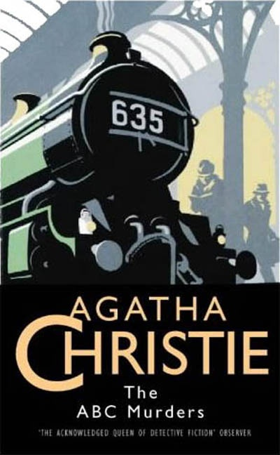

Another letter soon arrives, warning of a murder in Bexhill-on-Seat. At Bexhill, Poirot and Hastings investigate the death of Betty Barnard, a young waitress, with skeptical support from Inspector Crome of Scotland Yard. They learn that Betty was engaged, and her forthright sister, Megan explains that Betty liked to flirt and sometimes quarreled with Fraser over her casual dalliances with other men. Poirot finds himself in conference with Scotland Yard, insisting repeatedly that the killer must have a motive or a reasoning system for selecting victims. A third letter arrives, warning of a pending crime in Churston. Poirot rushes there, learning en route that a prominent doctor, Sir Carmichael Clarke, is the third victim. Clarke’s wife is dying of cancer. They meet Clarke’s younger brother, Franklin, along with Clarke’s secretary, Thora Grey.
Poirot will later realize Franklin is the killer, murdering his brother because he feared he would be disinherited after his brother married Thora and had children. He committed the other crimes to distract from this. Alexander Bonaparte Cust is also following the crimes and was recently in the Churston area. He has memory lapses since his military service in World War I. Cust is Christie’s “red herring”—a suspect to distract from the real killer. Poirot gathers the family and friends of the victims to learn more about what they know. Poirot learns that Lady Clarke, Sir Carmichael’s widow, wishes to see him, and Thora Grey discloses that Lady Clarke recently fired her. Donald Fraser confesses he is having dreams of murdering Megan Barnard on a beach, the same way her sister died. A fourth letter from ABC arrives, pointing to a pending murder in the city of Doncaster during a horse race. The crowds will make an investigation more difficult. Thora, when pressed, recalls seeing a poorly dressed man in glasses who tried to sell her stockings.
 Cust has been traveling from town to town making sales and has lied to his landlady about his coming trip to Doncaster. The day of the race arrives, with Poirot assuring the assembled family and friends that the killer will eventually become overconfident and be caught. A dead man is found in a movie theater that Cust has just exited. The victim’s surname began with E, so the police remain concerned the killer may continue in order to maintain the alphabetical scheme. Local innkeepers report Cust’s odd behavior—he was seen washing blood out of his clothing—and his suitcase of stockings is also found, along with a hotel register showing his initials.Just as his landlady’s daughter and her boyfriend are reporting Cust’s strange behavior, including lying about his travel to Doncaster, Cust leaves his lodgings on a pretext. He faints outside the police station in Andover and is arrested for the crimes. He has an alibi for Betty Barnard’s death, and no memory of writing the letters, but insists he must be responsible. Poirot, unsatisfied with this, has a sudden epiphany. Poirot gathers all the family and friends together and explains Cust is not the killer, and the other murders are meant to conceal Franklin’s motive for killing Carmichael Clarke’s death. Franklin is arrested. Poirot assures Donald Fraser his dreams mean he is in love with Megan and feels guilty about it, but that they should celebrate their happy relationship. Cust thanks Poirot for his help. Poirot rejoices in another solved case.